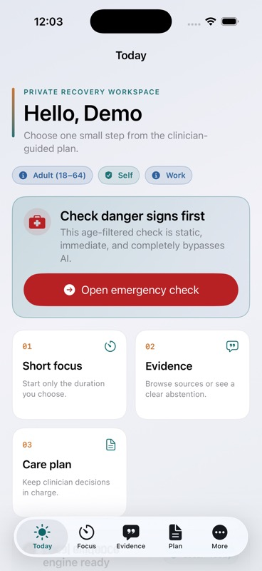
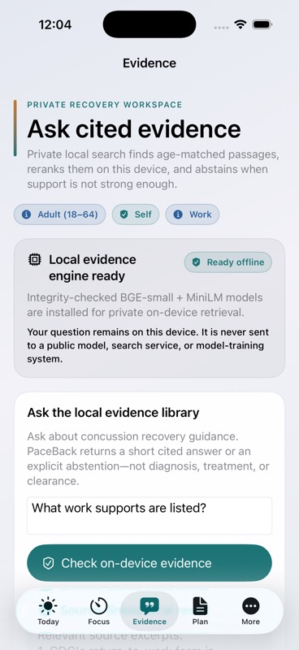
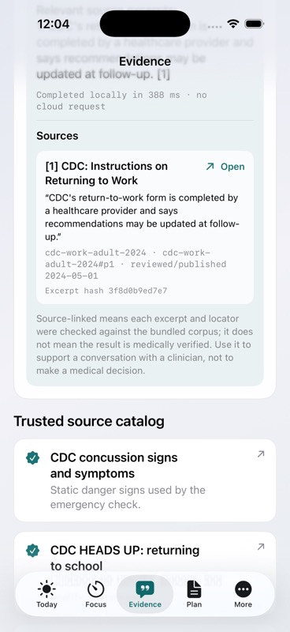

PaceBack is an all-ages native Apple companion. On Mac, a confirmed clinician plan can meet trusted public
guidance inside bounded hybrid RAG. On iPhone, frozen local models search public trusted evidence only.
No health question goes to a cloud model. The person stays in control.
Your confirmed plan includes reduced screen brightness and scheduled breaks.
Plan p. 1Plan p. 22 claims located
Two native surfaces. One evidence-before-answers rule.
Mac and iPhone expose different evidence boundaries instead of flattening them into one bigger claim.
01
Five care contexts · local by design
Age changes the experience—not the privacy promise.
PaceBack stores an alias and age band, never a name or birth date. Each local profile has a separate key;
macOS adds an isolated retrieval namespace, while iPhone filters public evidence before both retrievers.
Profiles and documents do not sync between platforms. Select an age context to inspect the role boundary.
Selected profile · synthetic
Age7
Normal operator
Caregiver-operated
Direct experience
Brief guided child view
Protected by local gate
Imports, reports, deletion, and settings
Ages 0–5 are fully caregiver-operated. Exact birth dates are never stored.
02
Native iPhone · setup you can inspect
Private AI arrives as a receipt—not a promise.
Evidence search stays locked until four frozen artifacts pass a signed, byte-for-byte verification. The
setup is explicit, cancellable, and user-initiated; after activation, evidence search is offline.
Stage 01 · explicit transfer
The user chooses when the model pack arrives.
Four frozen files—BGE and MiniLM ONNX weights plus their tokenizers—download in the foreground over
immutable-revision HTTPS URLs on allowlisted hosts. PaceBack sends no profile, health, symptom, query,
or care-plan fields.
Real app simulator captures · research prototype · not clinical validation
01
Constrain transport
Immutable-revision HTTPS URLs on allowlisted hosts; ephemeral, cookie-free, cache-free session.
02
Prove integrity
A bundled Ed25519 public key verifies the signed manifest, then exact size and SHA-256 verify every artifact.
03
Activate atomically
Downloads land in staging. Only a complete verified pack becomes active; an interrupted pack stays inert.
04
Stay offline
Frozen BGE/MiniLM ONNX models run locally. There is no cloud generation, search, tooling, or fallback.
One captured run · not a latency benchmark
A local answer leaves a source trail.
In this simulator capture, a work-support query completed locally in 388 ms with no cloud request. The
result cites a bundled CDC passage and explicitly says source-linked does not mean medically verified.
The locator proves only that the excerpt maps back to that bundled passage.
Captured runtime
388 ms
Network
No cloud request
Output
Extractive + source linked

Today / safety stays one tap away

Ask / question remains on device

Result / locator and limitation travel together
03
AI/ML · built for inspection
The answer is the last step—not the product.
Every evidence request carries profile, age, role, care context, and evidence scope. Filters run before
both retrievers. macOS can add a confirmed plan namespace; iPhone stays inside its bundled public corpus.
Retrieved text is evidence, never an instruction.
Try an illustrative request path
Deterministic bypass
Danger signs never wait for AI.
Reviewed danger-sign phrases route directly to static CDC emergency instructions. Retrieval and model
generation do not run.
Maximum rounds
0
Answer rule
Static safety copy
Stop condition
Immediate
01
Scope before rankingprofile namespace + allAges + selected age corpus
required
02
FTS5 / BM25sparse lexical retrieval · top 50
local
03
BGE-small-en-v1.5384-dimensional ONNX embeddings · top 50
The completed 100-item diagnostic ran the actual signed BGE + MiniLM model pack and a deterministic
fallback comparator. It is automated and unreviewed: useful engineering evidence, not clinical validation
or proof of health effectiveness.
Actual signed model pack compared with the deterministic fallback on the same 100 items
Automated metric
Signed BGE + MiniLM
Deterministic fallback
Recall@20
0.9767
0.9667
nDCG@20
0.954886
0.894214
Mean latency
51.53 ms
7.09 ms
Retrieval ranking improved in this diagnostic while mean latency increased. Human answer review is still absent.
Privacy and restraint are not settings you can turn off.
Hard boundary / 01
Health data has no intentional route to the internet.
No accounts, analytics, ads, trackers, cloud generation, external search, or user-data transmission.
iPhone setup makes four user-requested artifact transfers; their requests include no profile, health,
symptom, query, or care-plan fields. Normal evidence use is offline.
→ SQLCipher on macOS; per-profile AES-GCM keys in the iPhone Keychain
→ Signed model pack, pinned revisions, exact hashes, and ONNX probes
→ No live retraining; no child or user health data enters model weights
Hard boundary / 02
Danger signs bypass AI.
Age-specific static emergency guidance appears without retrieval or generation, including infant and young-child behavioral signs.
Hard boundary / 03
On macOS, clinician plans are confirmed—not silently interpreted.
Every page-cited extracted restriction stays a draft until the profile owner or caregiver confirms it. iPhone plan RAG is absent.
Hard boundary / 04
Uncertainty has a visible outcome.
If the verifier cannot locate support, PaceBack removes the claim or says it could not verify an answer.
Brief, standard, and full reading modes; adjustable typography and spacing; reduced motion; keyboard
navigation; VoiceOver labels; and text-to-speech are part of the native app’s contract.
01
Today
One calm view of confirmed supports, the next planned task, and explicit safety access.
orientation
02
Focus session
A cancellable timer that pauses when the user reports a higher symptom rating—without prescribing what to do next.
pacing
03
Simplify
On macOS, general text can use guarded local generation. Medical or restriction text always stays extractive.
macOS
04
Ask evidence
Age-filtered answers arrive with source locations, route metadata, and visible abstention.
grounding
05
Care plan
macOS PDF extraction produces a draft; nothing enters retrieval until confirmed. iPhone keeps plan content outside evidence search.
platform boundary
07
External design inputs · not validation
Research shaped the questions, not the conclusions.
We used published usability work to challenge the interaction design and the official rubric to challenge
the engineering proof. None of these sources tested PaceBack, its AI, its safety, or health outcomes.
01 / Youth
Design with young people and clinicians—not around them.
A small 2019 pediatric concussion app study used iterative input from seven young people and seven
health professionals. It supports participatory, age-aware usability as a design input; it does not
establish PaceBack’s usability or effectiveness.
A 2025 adult persistent-symptom app study emphasized a personalized-yet-simple experience and reported
two adverse events related to increased symptom awareness. That informed restrained check-ins, brief
modes, and no endless nudging—not a safety or outcome claim.
Hack for Humanity’s criteria foreground AI/ML technical complexity, data responsibility, domain and
clinical safety, research foundation, innovation, and accessible UX. We map those criteria to files
and measured limits; the rubric is a build target, not product evidence.
This map points to inspectable work. It does not predict a score.
01
Technical complexity
Two native SwiftUI targets: a bounded macOS sidecar pipeline plus iPhone ONNX retrieval behind signed setup, pre-filtering, reranking, verification, and cancellation.
Minimized, isolated profiles; platform-native encrypted storage; immutable artifact revisions and hashes; no cloud AI or user-data training; deterministic safety and visible failure states.
Confirmed-only plans on macOS, public trusted evidence only on iPhone, age-specific care contexts, deterministic danger signs, and explicit non-diagnostic limits.
A visible download-to-trust ceremony, cognitive-load-aware reading modes, all-age role transitions, human confirmation, keyboard-first flows, and non-color status.